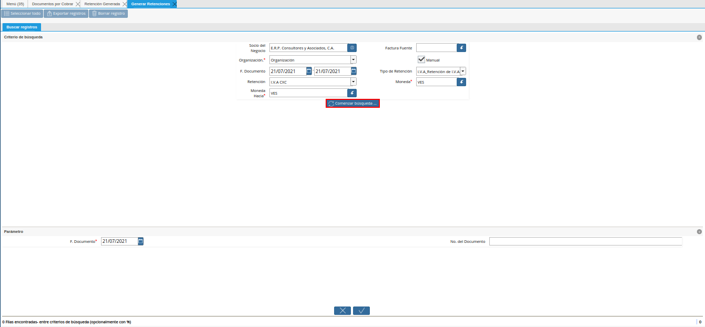
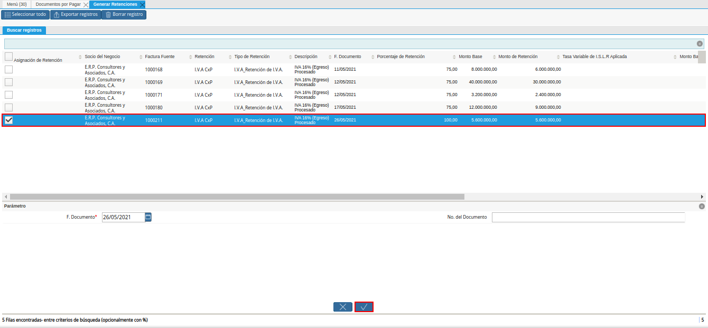

3.4.1.1. Configuración del Socio de Negocio¶
ADempiere permite seleccionar por socio del negocio el porcentaje de IVA a aplicar en los documentos de compra/venta del mismo, a continuación se explica el procedimiento para seleccionar el IVA en un socio del negocio determinado.
Ubique en el menú de ADempiere la carpeta “Relación con Socios del Negocio”, luego seleccione la carpeta “Reglas de Socios del Negocio”, por último seleccione la ventana “Socio del Negocio”.
Imagen 1. Menú de ADempiere
Ubique el registro del socio del negocio proveedor al cual se le va a configurar la retención de IVA, para este ejemplo el socio del negocio proveedor es “E.R.P. Consultores y Asociados, C.A.”.
Imagen 2. Socio del Negocio
En la ventana principal “Socio del Negocio”, verifique que en el campo “Tipo de Persona” se encuentre seleccionado el tipo de socio del negocio al que se le aplicará la retención de IVA, en este campo debe indicar si el socio es persona jurídica domiciliada, persona jurídica no constituída domiciliada, persona jurídica no domiciliada, persona natural no residente, o persona natural residente.
Imagen 3. Campo Tipo de Persona
Seleccione la pestaña “Proveedor” para configurar la retención de IVA a aplicar al socio del negocio.
Imagen 4. Pestaña Proveedor
Ubique en la parte inferior del documento los checklist para definir las retenciones a aplicar a un socio del negocio proveedor.
Imagen 5. Retenciones a Aplicar
Note
Al tildar el check “No Aplica Retención de I.V.A.” en el registro del socio del negocio, se indica a ADempiere que a ese socio no se le deben aplicar retenciones del IVA. Lo que significa que cuando sea seleccionado dicho socio en cualquier documento por pagar cargado en ADempiere que maneje valor de impuesto, no le calculará ningún monto de retención.
Al destildar el check “No Aplica Retención de I.V.A.” en el registro del socio del negocio, se habilita el campo “Retención de I.V.A. Aplicada”, con el cual se indica a ADempiere cual es el porcentaje de retención a aplicar a ese socio cada vez que se le genere un documento por pagar con valor de impuesto.
Para realizar este ejemplo de la retención de IVA y observar el comportamiento de los check en ADempiere, se tildan los check referentes a retención de ISLR y municipal.
Imagen 6. Check de Retenciones

Seleccione en el campo “Retención de IVA Aplicada”, el porcentaje de IVA a retener al socio del negocio proveedor, para este ejemplo el porcentaje a retener es cien por ciento (100%).
Imagen 7. Campo Retención de IVA Aplicada
Warning
Solo debe tildar la retención que no se aplicará al socio del negocio proveedor que esta configurando y guarde los cambios realizados en el socio del negocio con ayuda del icono “Guardar Cambios” ubicadi en la barra de herramientas de ADempiere.
3.4.1.2. Ejecución de la Estimación de Retenciones¶
Al completar el registro del documento por pagar generado al socio del negocio proveedor previamente configurado con el tipo de retención, se genera de manera automática el pre-cálculo de retención del IVA, el mismo se puede visualizar de la siguiente manera.
Note
El documento por pagar debe estar en estado “Completo”, para este ejemplo se utiliza la factura número “1000154” del socio del negocio proveedor “E.R.P. Consultores y Asociados, C.A.”.
Imagen 8. Factura Aplicada al Socio del Negocio
Seleccione el icono “Visualiza Detalle” para apreciar donde es usado el documento, el mismo se encuentre ubicado en la barra de herramientas de ADempiere.
Imagen 9. Icono Visualiza Detalle
Warning
ADempiere le genera al usuario por medio del icono “Visualiza Detalle”, las alertas donde indica cuales fueron las retenciones aplicadas (Retención Generada) y cuales retenciones no fueron aplicadas (Log) según la configuración que tiene un socio del negocio determinado.
Podrá apreciar el menú desplegado por el icono “Visualiza Detalle”, el mismo muestra los documentos donde es utilizado el documento por pagar.
Imagen 10. Menú del Icono Visualiza Detalle
La opción “Socio del Negocio”, muestra el registro del socio del negocio utilizado en el documento por pagar donde es seleccionado el icono “Visualiza Detalle”, puede ser utilizada para corroborar que las retenciones aplicadas al documento por pagar sean las mismas configuradas para el socio del negocio.
Imagen 11. Opción Socio del Negocio
La opción “Retención Generada”, muestra el documento de retención aplicado al documento por pagar donde es seleccionado el icono “Visualiza Detalle”.
Imagen 12. Opción Retención Generada
La opción “Log de Retención” muestra el log de la retención no aplicada al documento por pagar donde es seleccionado el icono “Visualiza Detalle”.
Imagen 13. Opción Log de Retención
Warning
Adicionalmente, se puede consultar el impuesto de un documento por pagar al seleccionar la pestaña “Impuesto de Factura”, de la ventana “Documentos por Pagar”.
3.4.1.3. Generar Retención de IVA Fiscal¶
Ubique y seleccione en el menú de ADempiere, la carpeta “Manejo de Retenciones”, luego seleccione la ventana de busqueda inteligente “Generar Retenciones”.
Imagen 14. Menú de ADempiere
Podrá apreciar la ventana de búsqueda inteligente con diferentes campos para filtrar la busqueda.
Imagen 15. Ventana de Búsqueda Inteligente

Seleccione en el campo “Socio del Negocio”, el socio del negocio relacionado a la retención que requiere generar. Para este ejemplo utilizaremos el socio del negocio “E.R.P. Consultores y Asociados, C.A.”.
Imagen 16. Filtrar por Socio del Negocio
En el campo “Organización”, la organización relacionada a la retención que requiere generar.
Imagen 17. Campo Organización de la Retención

Seleccione en el campo “F. Documento”, el rango de fecha en la cual fue generado el documento por pagar relacionado a la retención que requiere generar.
Imagen 18. Campo Fecha del Documento de la Retención
Seleccione en el campo “Retención”, la retención por la cual requiere filtrar la información.
Imagen 19. Campo Retención
Seleccione en el campo “Moneda Hacia”, la moneda a la cual requiere convertir el monto de la retención.
Imagen 20. Campo Moneda Hacia
Seleccione en el campo “Factura Fuente”, la factura por la cual requiere filtrar la información para generar la retención.
Imagen 21. Campo Factura Fuente
Seleccione en el campo “Tipo de Retención”, el tipo de retención por el cual requiere filtrar la búsqueda.
Imagen 22. Campo Tipo de Retención
Note
El campo cuenta con tres opciones que son “IM_Retencion de Impuesto Municipal, “ISLR_Retención de I.S.L.R.” y “I.V.A_Retención de I.V.A.”. Recuerde que la selección de este campo va a depender de la retención que se va a aplicar al documento de cuentas por pagar.
Seleccione en el campo “Moneda”, la moneda del documento y desde la cual se requiere convertir el monto de la retención.
Imagen 23. Campo Moneda
Seleccione la opción “Comenzar Búsqueda”, para filtrar la información en base a los valores seleccionados en los campos indicados anteriormente.

Imagen 24. Opción Comenzar Búsqueda
Note
Al utilizar los criterios de búsqueda se tilda el botón “Comenzar Búsqueda”, luego se mostrará los pre-cálculos de retención de IVA, dependiendo de los criterios utilizados.
Podrá apreciar las retenciones que el socio del negocio seleccionado tiene en los diferentes documentos.
Imagen 25. Retenciones del Socio del Negocio
Seleccione el pre-cálculo de la retención a generar y verifique que el campo “F. Documento”, tenga la misma fecha del campo “Fecha Contable” del documento por pagar al cual se le aplicará la retención. Finalmente se procede a seleccionar la opción “OK” para generar la retención al socio del negocio seleccionado.

Imagen 26. Selección de Retención y Opción OK
Podrá apreciar que el proceso se realizó correctamente con el mensaje “OK” mostrado por ADempiere al final de la ventana de busqueda inteligente.
Imagen 27. Mensaje OK
3.4.1.4. Imprimir Documento de la Retención Aplicada al Socio del Negocio¶
Ubique y seleccione en el menú de ADempiere, la carpeta “Gestión de Compras” y luego seleccione la ventana “Documentos por Pagar”.
Imagen 28. Menú de ADempiere
Podrá apreciar la ventana “Documentos por Pagar” donde se encuentran todos los registros que posee la misma.
Imagen 29. Ventana Documentos por Pagar
Seleccione el icono “Encontrar Registro” ubicado en la barra de herramientas de ADempiere, para realizar una busqueda avanzada del documento de retención generado.
Imagen 30. Icono Encontrar Registro
Seleccione la pestaña “Avanzado” para filtrar la busqueda por “Socio del Negocio”, “Tipo de Documento de Retención de Cuentas por Pagar” y “Fecha de Registro”.
Imagen 31. Buscador Avanzado
Seleccione el icono “Nuevo” para generar el número de filas de busqueda que se necesitan, para este ejemplo se necesitan tres (3) filas.
Imagen 32. Icono Nuevo
Seleccione en la primera fila la opción “Socio del Negocio” e introduzca el nombre del socio del negocio en la columna “Valor Consulta”, para este ejemplo el socio del negocio es “E.R.P. Consultores y Asociados, C.A.”.
Imagen 33. Selección Socio del Negocio
Seleccione en la segunda fila la opción “Tipo de Documento Destino” y seleccione en la columna “Valor Consulta” el tipo de documento destino, para este ejemplo el tipo de documento destino es “Retención de IVA Cuentas por Pagar”.
Imagen 34. Selección Tipo de Documento Destino
Seleccione en la tercera fila la opción “Fecha de Registro” y seleccione en la columna “Valor Consulta” la fecha en la que se realizo la retención, para este ejemplo la fecha es “26/05/2021”.
Imagen 35. Selección Fecha de Registro
Seleccione la opción “OK” para realizar la busqueda filtrada por los campos seleccionados.
Imagen 36. Opción OK
Note
El registro de retención de IVA generado, también se puede ubicar de manera rápida, al posicionarse en el registro del documento por pagar (Factura Principal), al cual se esta aplicando la retención, luego seleccionar el icono de la barra de herramientas “Visualiza Detalle (Donde es Usado)”, y seleccionar la opción “Documentos por Pagar (Asignados)”. Al tildar esta opción se abrirá otra ventana de “Documentos por Pagar” pero con el registro del documento “Retención de IVA Cuentas por Pagar” y el monto total de la retención.
Luego de ubicar el registro de la retención, seleccione el icono “Imprimir” ubicado en la barra de herramientas de ADempiere para visualizar el reporte del documento de retención.
Imagen 37. Opción Imprimir
Podrá apreciar de la siguiente manera, el reporte del documento “Retención de IVA Cuentas por Pagar”.
Imagen 38. Documento de Retención